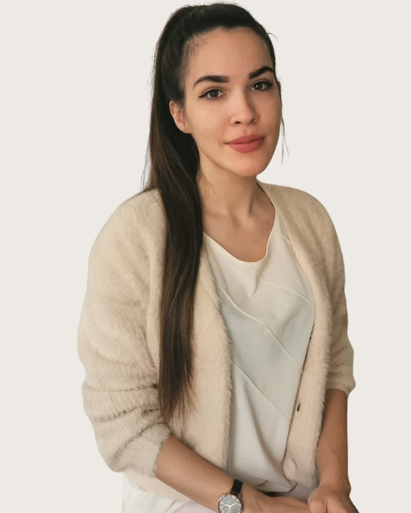

Pszichológus
Vukov
Johanna
Pszichológus, irodalomterapeuta, képzésben lévő személyközpontú tanácsadó
Fogadó kolléga: Vajas Zsuzsanna, pszichológus asszisztens. +36 30 961 1364, hétköznap 9-15. Ő segít, ha nem biztos, hogy Vukov Johanna a megfelelő választás.
Ahogy ezeket a sorokat olvassa, talán már megjelent Önben az elképzelés, hogy elinduljon egy olyan úton, ahol Önmaga mélyebb megismerése felé fordul. Ezzel pedig máris megtett egy nagyon bátor lépést afelé, hogy úgy éljen, ahogyan szeretne.
Hiszek abban, hogy minden ember önmagának a legjobb ismerője, és valahol már rendelkezik mindazokkal a válaszokkal, amiket keres. Pszichológusként abban szeretnék segítséget nyújtani a hozzám fordulóknak, hogy feltegyem azokat a kérdéseket, illetve felkínáljam azokat perspektívákat, amelyek segíthetnek ezeket a válaszokat megtalálni, lámpásként világítják meg az önmagunkkal való szembenézés kalandos, egyszerre felszabadító és félelmetes ösvényét.
Úgy gondolom, a legnehezebb helyzetek is magukban hordozzák a személyes fejlődés lehetőségét. Ám ehhez először meg kell találni a kiutat, hogy a történtekre kellő távolságból, már a történetünkként tekinthessünk, és csak ezután kezdhetjük el keresni, azt, hogy a veszteségek mellett mi az, amit kaptunk is. Mindez egyszerűbb, ha az életünkben van egy biztonságos tér, ahol valaki meghallgat bennünket és figyel ránk, úgy, hogy közben nem ítélkezik és nem próbál tanácsot adni.
"Valaki már járt odalent a mélyben, és felhozta nekünk a szavakat." (Jeanette Winterson)
Igény szerint a közös munkánkat az irodalomterápia módszerével is színesíthetjük. Az irodalomterápia során valamilyen szöveggel dolgozunk, ez nem kell, hogy szépirodalmi mű legyen, lehet akár egy dalszöveg vagy saját írás is. Amellett, hogy a szöveggel való munka esztétikai élményt is nyújt, hídként szolgál a kliens és a pszichológus, illetve a kliens és annak saját belső világa között, mivel könnyebbé teszi az érzelmek és gondolatok felismerését, megfogalmazását.
Tomán Edina pszichológus
Akinek lelkiismeretes segítségével elkészült a szülő korai elvesztését követő poszttraumás növekedést az IPA módszerével vizsgáló szakdolgozatom, és megerősített abban, hogy mi az én utam.
Kőváry Zoltán klinikai szakpszichológus, habilitált egyetemi docens
Aki bevezetett az egzisztenciális pszichológia világába, és elég fontosnak tartja a házi kedvenceink lelki világunkban betöltött szerepét ahhoz, hogy szakdolgozati kutatásban és publikációban is megjelenjenek.
Zalka Zsolt pszichiáter, pszichoterapeuta
A Bevezetés a klinikusságba tantárgy oktatója, akinek köszönhetően a mesterképzés utolsó félévében a hiányzó részek a helyükre kerültek.
Polcz Alaine pszichológus, tanatológus
Aki már gimnazista koromban megmutatta, hogy mik azok az értékek, amik mentén segíteni szeretnék.
Irvin D. Yalom pszichiáter, pszichoterapeuta
Aki újra és újra megerősít abban, hogy a segítő szakember is ember.
Amiben segítek
Vukov Johanna saját megfogalmazásában
Önismeret mélyítése
Életvezetési nehézségek
Önbizalom, önértékelés, erőforrások feltérképezése
Érzelemszabályozás fejlesztése
Kapcsolati elakadások
Pályaválasztással kapcsolatos kérdések, elakadások
Veszteségfeldolgozás
Képzés és szakmai út
A képzések és a szupervízió az akkreditált szakképzőhely rendjében folynak. Mit jelent ez Önnek
Iskolai végzettség
2018, 2021
Viselkedéselemző
ELTE PPK pszichológia BA
2021, 2023
Okleveles pszichológus (klinikai- és egészségpszichológia specializáció)
ELTE PPK pszichológia MA
2022, 2024
Biblioterapeuta (irodalomterapeuta)
PTE BTK Biblioterápia szakirányú továbbképzés
Szakmai képzések
Napfogyatkozás Egyesület, A gyászcsoport-vezetés gyakorlata (2021)
Napfogyatkozás Egyesület, A gyász lélektana (2024)
Lelki Egészségvédő Alapítvány, Személyiség és egészségfejlesztés a Katarzisz Komplex Művészetterápia Módszerével®. Komplex Művészetterápiás Képzés
I. blokk (2025)
MASZEPTE, Személyközpontú Tanácsaadó (2025, jelenleg is)
Önismeret
100 óra sajátélmény a biblioterápiás képzésben (2022, 2023)
150 óra MASZEPTE önismereti csoport (2024, jelenleg is)
Szakmai tapasztalat
Bagázs Közhasznú Egyesület, IKSZ csoportvezető (2019)
TIESZ Ideggondozó, szakmai gyakorlat (2021, 2023)
Dr. Kenéz Zoltán ESZI, Burgundia utcai Idősek Otthona, terápiás munkatárs (2023, jelenleg is)
segítő beszélgetések, irodalomterápiás csoportfoglalkozások lakók és hozzátartozóik számára
Ha inkább mást keresne
Három kolléga hasonló területekkel. A teljes regiszterben 37 szakember szűrhető.
Következő lépés
Időpont Vukov Johannanál
Írjon nekünk, vagy hívja ügyfélszolgálatunkat hétköznap 9 és 15 óra között. Az első alkalom 50 perc, díja 15-20 ezer forint alkalmanként. Ha Vukov Johanna naptára tele van, megmondjuk, ki tud hasonló területen fogadni.